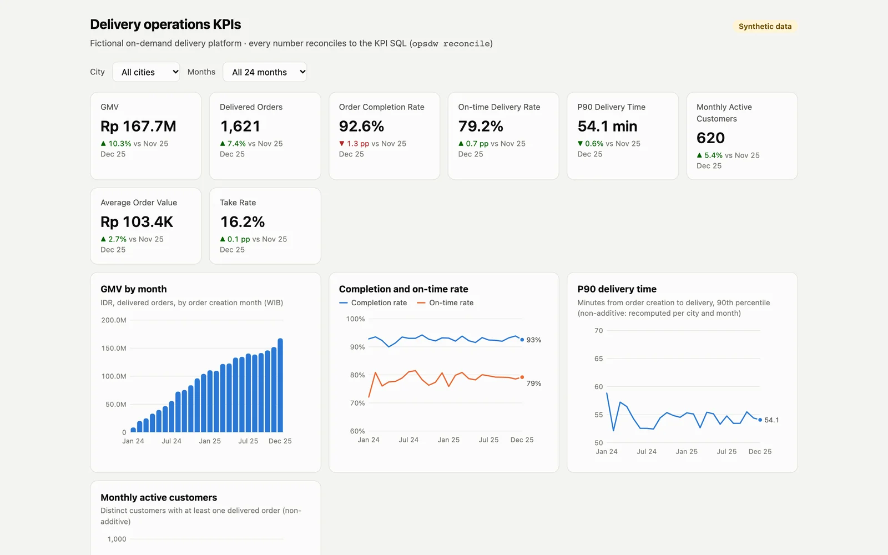
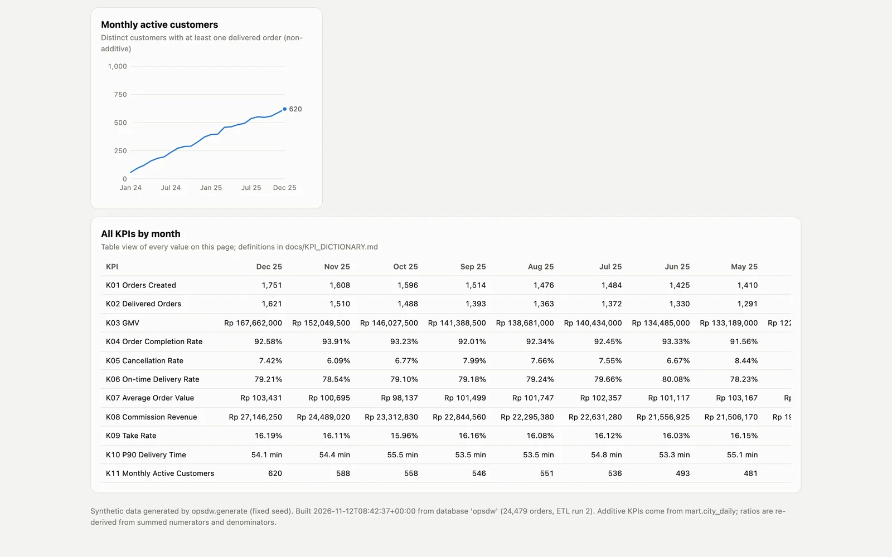
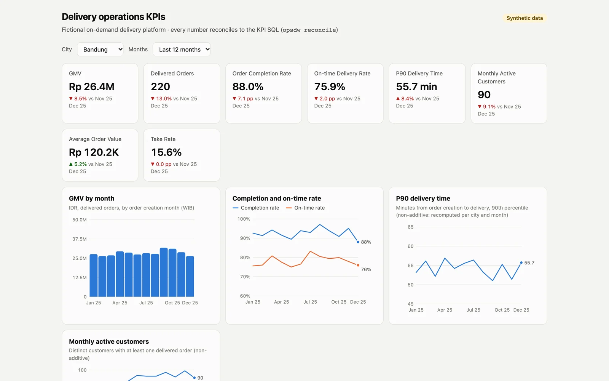
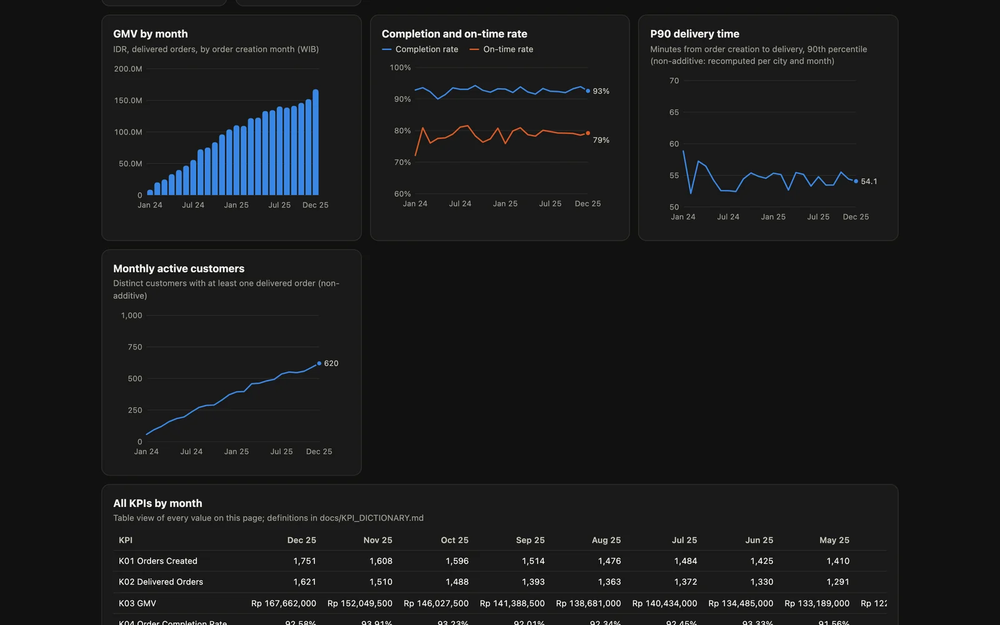
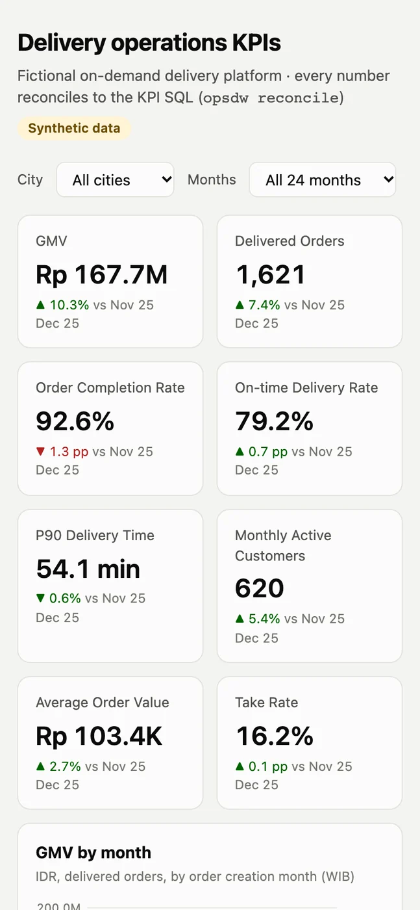

OpsDW
One definition per KPI, and proof that the SQL, the BI model and the dashboard all report the same number.
- Role
- Solo — KPI definitions, data model, SQL, data-quality rules, testing; implemented with AI coding agents under my direction
- Stack
- PostgreSQL 18, Python + uv, pytest, Docker Compose, DAX (text only)
- Timeline
- November 2026
- Status
- Built · tested locally · not deployed, no public repo

Two dashboards, two different GMVs.
Operations teams lose trust in numbers in familiar ways: a late delivery update never reaches the report, a merchant’s new commission tier is applied to last year’s orders, a city P90 is averaged into a national P90, and the BI tool quietly disagrees with the analyst’s SQL.
OpsDW is a small but complete warehouse for a fictional on-demand delivery platform in six Indonesian cities, built to show that each of those failures is caught by design or by a test. All data comes from a seeded generator that also writes down every defect it injects, so the pipeline can be checked against a known answer.
Every layer has a check.
Landing files → raw → staging → star schema → mart → BI views → dashboard.
- 01
Incremental, idempotent ETL
Each run takes only rows after a watermark, merges them, and commits the watermark in the same transaction. Late, out-of-order and duplicate records are handled; a crash rolls back cleanly. A test proves 53 incremental runs produce exactly the same tables as one full rebuild.
- 02
History kept where it changes money
Merchant commission tiers are a type-2 slowly changing dimension, so an order is charged the tier valid when it was placed. One query measures how wrong historical commission would be if the current tier were used instead.
- 03
A data-quality gate that can fail
43 checks — uniqueness, referential integrity, accepted values, business rules, history integrity, freshness and layer-to-layer row and sum reconciliation. Ten sabotage tests break the data on purpose and the gate must exit with an error each time.
- 04
One KPI, three places, one number
Eleven KPIs are defined once (question, numerator, denominator, grain, filters, caveats). The same values are computed by the canonical SQL, by the Power BI-ready model’s logic, and by the dashboard, then compared cell by cell. Tests check the comparison catches a wrong roll-up, such as averaging city percentiles.
Measured on 800,100 orders.
Benchmark volume: 800,100 orders and 3.58 million order events over two years, plus injected duplicates and corrupt rows. Each query ran seven times with EXPLAIN (ANALYZE, BUFFERS); the median is shown. “Before” is the same data with no indexes and no partitioning.
| Query | Physical design | Before → after |
|---|---|---|
| One month by city | Index on order date | 21.6 → 11.3 ms |
| A customer’s latest 20 orders | Composite index | 23.0 → 0.02 ms |
| Hourly deliveries over 7 days | Monthly partitions + index | 44.8 → 1.7 ms |
| One courier’s active days in a quarter | Partial index | 48.4 → 0.33 ms |
| 24-month dashboard trend | Pre-aggregated mart | 75.9 → 1.1 ms |
| Check | Result |
|---|---|
| KPI reconciliation: 11 KPIs × 24 months × 7 city views | 1,848 cells · 0 mismatches |
| Data-quality gate on the benchmark data | 42 pass · 1 expected warning · 0 fail |
| Fact orders vs the generator’s ground truth | 799,947 = 800,100 − 153 corrupt-only |
| Initial load of 4.4 million raw rows (ingest + transform) | 22.9 s + 93.3 s |
| Daily incremental run (~10,500 raw rows) | 2.0–3.5 s |
All figures come from one run on one laptop (Docker VM, 4 vCPU, warm cache) against invented data. They show the effect of the physical design, not production latency, and say nothing about any real company. The benchmark volume also exposed a bug the small dataset could not: one load step became quadratic once its key list outgrew memory, and was rewritten as a join.
Eighteen questions, each with a known answer.
The analytical queries cover cohort retention, an order funnel, rolling 28-day active customers, delivery-time percentiles, courier streaks (gaps and islands), top merchants per city, RFM segments, repeat rate, year-over-year growth, Pareto concentration and a 7-day moving average. Each runs against a small hand-built dataset in a test and must return the result worked out by hand.




Tested on one laptop. No Power BI file.
One script rebuilds everything from scratch and runs every check: re-running the transform must change nothing, the data-quality gate must pass, the reconciliation must show zero mismatches, and 54 tests must pass (ETL behaviour, query results, sabotage cases, reconciliation). Last run: 12 November 2026, all passing. An independent code review afterwards found six issues, including invalid values such as “NaN” slipping through validation; each was fixed with a regression test.
- Not yet: a
.pbixfile — the semantic model is delivered as views, documented relationships and DAX text, and the DAX itself has never been run (no Power BI on macOS; only its SQL equivalent is tested). Also no scheduler or alerting, no deployment, no public repository. - The dashboard is static HTML regenerated by a command, not a live BI tool.
- The code was written with AI coding agents under my direction; the results above come from the runs recorded in the repository.